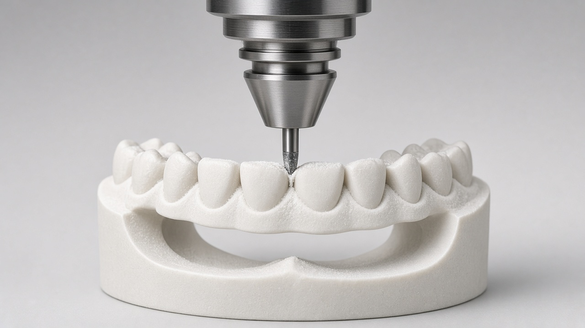

Milling · South Tyrol, Italy
Zirkonzahn
Zirkonzahn is known for its zirconia-focused CAD/CAM systems. We use it for precision milling of zirconia frameworks and full-arch prostheses.
- Unit[model]
- Used forZirconia, full-arch [confirm]
- Materials[confirm]